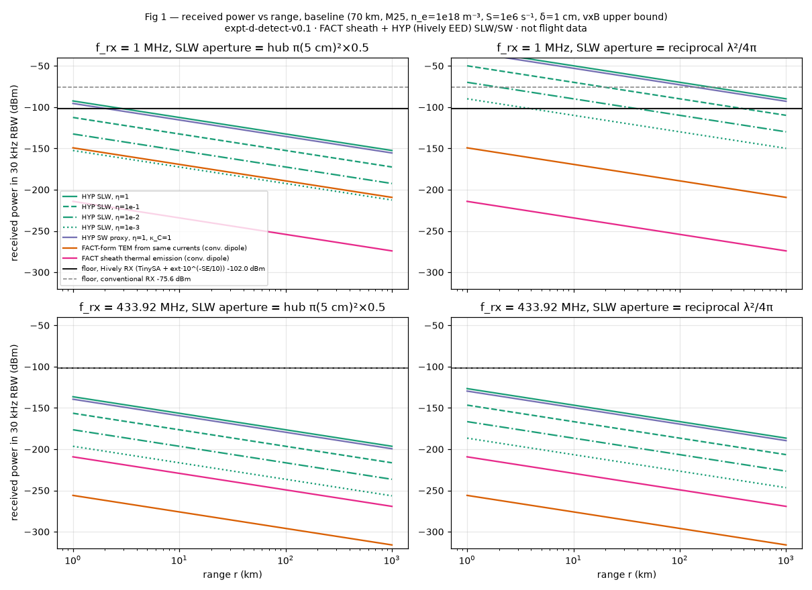
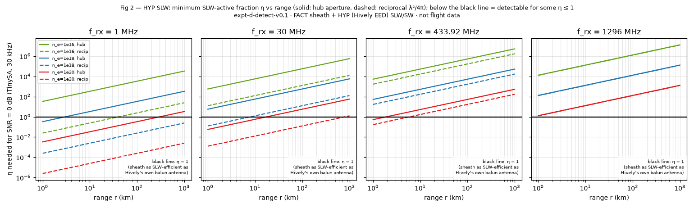
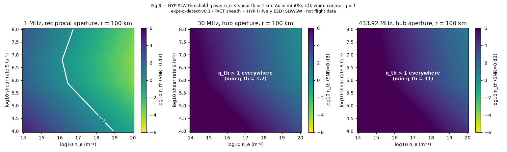
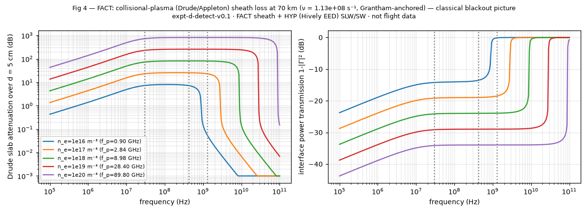
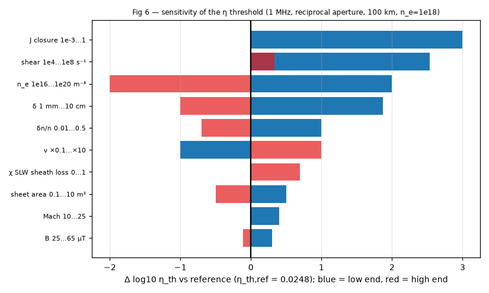

Could a hobby receiver pick up a “scalar wave” from a hypersonic vehicle?
A vehicle flying at 5 to 25 times the speed of sound wraps itself in a thin layer of hot, electrically charged gas: a plasma sheath. Lee Hively's extended electrodynamics (EED), which is not accepted physics, predicts that currents swirling in that plasma could launch a scalar-longitudinal wave (SLW). This page estimates whether Dan's receiver (a TinySA Ultra spectrum analyser on a Hively-style antenna) could hear one.
· Cloud twin pending sync () · details · New: Receiver chain (would amplifiers or a better receiver help?)
Does the sheath's flicker pattern help find the vehicle?
The plasma around a hypersonic vehicle does not sit still. It flickers at a few rhythms that are set by the airflow and have been measured in wind tunnels FACT. If Hively's SLW existed HYP, it would flicker at those same rhythms, so a receiver that knows the rhythm can average for longer and dig deeper into the noise. This tab works out how much that helps. It does not claim that an SLW exists or how strong one would be.
SLW at your η, per hertz HYP its broadband-turbulence part noise floor per hertz FACT Mack band wake band “detect line” after averaging (signal above it = detected) · grey = too close to use the far-distance formula
1 · What makes the sheath flicker? The four sources, with numbers
Narrowband = a recognisable “fingerprint” at a predictable frequency. Broadband = hiss spread over a wide range, useful only for plain averaging. The frequencies are measured flow physics FACT. How strongly each one makes the electron density flicker (the rms fraction m) has no flight measurement, so each m is a slider in section 5 ASSUMPTION.
- (a) Mack second mode: sound-like waves trapped in the thin, smooth (laminar) boundary layer on the vehicle's skin. Their frequency is f₂ = C·UE/(2δ), where UE is the flow speed at the edge of the boundary layer, δ is the layer's thickness, and C ≈ 0.6–0.9 is a measured constant. Measured values: C = 0.63–0.69 with f₂ = 580–1200 kHz on a cone in the Caltech T5 tunnel (Parziale, Shepherd & Hornung 2015, Table 3). HIFiRE-1 flight stability analysis gave 400–725 kHz at transition (Kimmel et al. 2019). The peak is about 20 % wide (read by eye from Parziale et al. Figs 6 and 9). FACT Here we take UE ≈ U and use the page's shear-layer δ ASSUMPTION.
- (b) Broadband turbulence: once the layer turns turbulent, the flicker becomes hiss. This is the v0.1 model: flat up to S/2π, then falling as f−5/3 ASSUMPTION. Parziale et al. show the narrow Mack peak broadening into exactly this kind of hiss as the flow transitions FACT.
- (c) Wake oscillation (“peel-off”): behind the vehicle the flow separates and the near wake oscillates at fsh = St·U/D, where D is the base diameter and St is the Strouhal number. Measured at Mach 3–6 on cylinders: St ≈ 0.2 (hydrodynamic mode) and 0.30–0.50 (acoustic-feedback mode) (Schmidt & Shepherd 2015; Awasthi et al. 2022; Thasu & Duvvuri 2022) FACT. Carrying the cylinder values over to an axisymmetric vehicle base is an ASSUMPTION.
- (d) Recombination: the plasma swept into the wake loses its electrons by recombining with NO⁺ ions at the rate coefficient α = 4.2×10⁻⁷ (Te/300)−0.85 cm³/s (Torr, St-Maurice & Torr 1977) FACT. So ne(t) = n₀/(1 + α n₀ t). Only the electrons that survive to the oscillating near wake (one diameter behind the base, ASSUMPTION) can carry the wake flicker. This is the decay envelope. Denser plasma dies faster, so at ne = 10²⁰ almost nothing survives. Electron attachment to O₂ (Kossyi et al. 1992) is shown for scale, but in hot (≳1000 K) gas the reverse detachment is faster, so it is not used.
2 · Receivers compared: v0.1 single look vs v0.2 with averaging
Numbers are the smallest η that would be detected: green = some η ≤ 1 works, red = impossible. v0.1 = one look in the 30 kHz receiver bandwidth. v0.2 = the same receiver averaging for the dwell time τ, weighting frequencies by the known flicker pattern. λ²/4π is the collecting area of an antenna resonant at that frequency (HYP reciprocity, HL2019 §VI, as in v0.1). kr = 2π × distance ÷ wavelength. Below about 1, the receiver is in the near field, where the far-distance formula does not apply.
3 · Why knowing the pattern helps: the averaging math
Plain words: noise jitters randomly, but its average is steady. A faint signal that is itself noise-like shows up as a tiny rise in the average power. Averaging for longer, and over the right frequencies, makes that rise measurable. Knowing where the flicker lives tells you which frequencies to add up, and with what weight.
FACT optimum detector for a weak noise-like signal with a known spectrum (Eckart filter + square-law detector + averaging; Rudnick 1961): d² = τ · ∫ ( s(f) / n(f) )² df detect when d ≥ d_th s(f) = received signal power per hertz, n(f) = noise power per hertz, τ = dwell (averaging) time, d = “deflection” (how many noise-standard-deviations the average rises) FACT flat band of width B: d = (S/N)·√(B·τ) (the radiometer equation, Dicke 1946) HYP s(f) = η² · s₁(f) → smallest detectable η_th = [ d_th² / (τ ∫ (s₁/n)² df) ]^(1/4) so η_th falls only as τ^(−1/4): 10 000× longer averaging lowers η_th 10×. v0.1 is the special case of one look: B·τ = 1, d_th = 1 (“SNR = 0 dB”). FACT a pure, steady tone would do better: SNR = η² P τ / n(f) (bin width 1/τ, coherent FFT gain). The sheath has no pure tone (the Mack peak is about 20 % wide and made of wave packets), so this is shown only as an upper bound.
d_th = 1 matches v0.1's “SNR 0 dB” convention. A confident detection would need d ≈ 5, which raises every η_th by √5 ≈ 2.2 (section 5). Real receivers drift: averaging to d = 1 at B·τ = 3×10⁴ needs gain stable to better than 1/√(Bτ) ≈ 0.6 %. That calls for a calibrated radiometer. A TinySA as-is does not meet it.
4 · Carrier or no carrier? SLW flicker vs the ordinary radio fingerprint
Under Hively's source term HYP, the SLW is sourced by charge non-conservation, ∂ρ/∂t + ∇·J (ρ = charge per m³, J = current density). In this model J is the plasma's own current (driven by motion through Earth's steady magnetic field) and it flickers with the electron density. There is no radio-frequency carrier in the source, so the SLW would come out at the flicker frequencies themselves (baseband: Hz to MHz), with no sidebands near 433 or 1296 MHz. At those bands only the weak tail of the turbulent hiss remains, and knowing the pattern does not help there.
Ordinary radio, which exists whether or not SLWs do FACT: any carrier that passes through the sheath (the vehicle's own telemetry, a radar echo, GPS) is amplitude- and phase-modulated by the same flicker. It picks up sidebands at carrier ± f₂ and ± fsh. This “parasitic modulation” has been measured in the lab with 50–100 kHz density oscillations (Yang et al. 2019) and modelled for flight (Yang et al. 2015; Roberds et al. 2024). The table evaluates the unchanged v0.1 plasma-slab formulas at ne(1 ± m₂):
When the mean loss is huge (blackout), the modulation is there but the carrier is buried. Above the plasma frequency the carrier gets through and carries the flicker pattern. This conventional fingerprint is the realistic way the flicker helps detection.
5 · Modulation settings (advanced)
The broadband turbulence level (δn/n), shear rate S, layer thickness δ, plasma density ne and receiver settings live in Full controls and on the main view. To mimic a smooth (laminar) sheath where the Mack waves dominate, turn the turbulence level down there.
Readouts:
6 · All equations new in v0.2, with symbols and sources
FACT E1 Mack second mode: f₂ = C · U_E / (2δ), 0.6 < C < 0.9 (Demetriades 1977, quoted by Parziale, Shepherd & Hornung 2015, JFM 781:87; their Table 3: C = 0.63–0.69) U_E = flow speed at the boundary-layer edge (≈ U here, ASSUMPTION); δ = boundary-layer thickness (m) FACT E2 wake oscillation: f_sh = St · U / D, St ≈ 0.2 … 0.5 (Schmidt & Shepherd 2015, JFM 785:R3; Awasthi et al. 2022 JFM; Thasu & Duvvuri 2022 PRFluids 7:L081401) FACT E3 NO⁺ dissociative recombination: α = 4.2×10⁻⁷ (T_e/300)^(−0.85) cm³/s (Torr, St-Maurice & Torr 1977, JGR 82:3287) FACT E4 two-body loss law dn_e/dt = −α n_e² ⇒ n_e(t) = n₀ / (1 + α n₀ t); τ_DR = 1/(α n₀) survival at the oscillating wake: n_e(t_s)/n₀ with t_s = x_s/U (x_s = distance behind the base, ASSUMPTION) FACT E5 (scale only) Kossyi et al. 1992, T_e = T_g = T: e+O₂+O₂ → O₂⁻+O₂: 1.4×10⁻²⁹ (300/T) e^(−600/T) cm⁶/s; e+O₂+N₂ → O₂⁻+N₂: 1.07×10⁻³¹ (300/T)² e^(−70/T) cm⁶/s; O₂⁻+O₂ → e+2O₂: 2.7×10⁻¹⁰ (T/300)^0.5 e^(−5590/T) cm³/s; ν_att = k₄₅[O₂]² + k₄₆[O₂][N₂], ν_det = k₅₇[O₂] (freestream air, USSA-1976) ASSUMPTION E6 chemistry corner f_chem = 1/(2π τ_DR) (shown for scale: above it the electrons are “frozen” and simply follow the gas density) ASSUMPTION E7 band shape (no source; a representation chosen here): top-hat of full width b·f: S_I,k(f) = I_k² / (b_k f_k) inside the band I_k = m_k · J · δ · √A_s (the same form as v0.1's I_src); I_sh also × survival (E4) FACT E8 independent flicker sources add in power: S_I = S_turb (v0.1) + S_Mack + S_wake HYP E9 received SLW power per hertz: s(f) = η² · 2 Z₀ S_I(f) A_rx / (4π r)² · 10^(−χ A_sh(f)/10) (Hively & Loebl 2019 Eq. B5 per hertz, with v0.1's I_pk = √2 I_rms) FACT E10 noise per hertz n(f) = (v0.1 shielded-receiver floor)/RBW (TinySA spec density ⊕ ITU-R P.372 F_a − SE; P.372 extrapolated below 0.3 MHz, ASSUMPTION) FACT E11 Eckart/radiometer detection d² = τ ∫ (s/n)² df, η_th = [d_th²/(τ ∫(s₁/n)² df)]^(1/4) (Rudnick 1961 J. Appl. Phys. 32:140; Dicke 1946 RSI 17:268) FACT E12 pure-tone bound SNR = η² P τ / n (standard coherent FFT gain; not physical for these bands) FACT E13 conventional AM/PM: ΔL = L(n_e(1+m)) − L(n_e(1−m)), Δφ = (2πf/c)·d·[Re n(1+m) − Re n(1−m)] (the v0.1 Drude slab evaluated twice; no new physics)
Symbols: S_I(f) = current power per hertz (A²/Hz); m = rms fractional flicker of electron density; J, δ, A_s, S, Z₀, A_rx, χ, A_sh, r as defined in the “FACT vs HYP” tab; τ = averaging time; d = deflection; b = band width as a fraction of its centre frequency; k₄₅… = reaction rate coefficients; [O₂] = oxygen molecules per m³. Numerical integrals use 200 midpoints across a band and 1200 log-spaced points from 1 Hz to 10 MHz (only where kr ≥ 1), identically in JS, Python and Wolfram.
7 · Honest verdict, in plain sentences
- The flicker is real FACT: a narrow Mack band at about 100 kHz – 1 MHz (it tracks U/δ), wake oscillation at about 100 Hz – 3 kHz (it tracks U/D), and broadband hiss once the sheath is turbulent. Recombination clears the wake plasma within centimetres to metres behind the vehicle when ne ≥ 10¹⁸.
- An SLW would be baseband HYP: under Hively's source term it would come out at the flicker frequencies themselves. There is no carrier and no sidebands at 433/1296 MHz.
- Dan's 433/1296 MHz antennas: still no. Averaging helps any noise-like signal, but at the baseline (100 km) the needed η only drops from about 5 300 / 13 000 (v0.1) to about 400 / 1 000 (1 s) and 130 / 320 (100 s). Only in the extreme ne = 10²⁰ case at 10 km would 433 MHz reach η ≈ 0.4 (1 s averaging, needing a stable radiometer).
- The natural sensor is an LF receiver tuned to the Mack band (hundreds of kHz). At the baseline and 100 km: η > 1.2×10⁻⁴ with a ~310 m resonant antenna (1 s), or η > 3×10⁻⁴ using all bands on the fixed 75 m-class antenna, versus v0.1's 0.025 at 1 MHz. Most of that gain comes from averaging and from using the whole low-frequency band. At the assumed 1 % amplitude the Mack line is more a fingerprint (a frequency you can predict) than extra power.
- The wake band is a poor sensor: it would need a resonant antenna tens of km long, its wavelength is hundreds of km, so at typical ranges of tens of km the receiver sits in the near field, and it competes with strong atmospheric noise. The wake plasma also recombines quickly.
- The ordinary radio fingerprint exists regardless of SLW FACT: telemetry, radar echoes or GPS crossing the sheath carry AM/PM sidebands at f₂ and fsh. That is the realistic way the flicker pattern helps detection.
- Nothing here says how strong an SLW would be. η stays a sweep. A null result from an LF Mack-band listener would set an upper bound on η (roughly ±2–3 decades from the measured-physics inputs alone, as in v0.1).
8 · Sources for this tab
- Parziale, N. J., Shepherd, J. E. & Hornung, H. G. (2015) Observations of hypervelocity boundary-layer instability. J. Fluid Mech. 781, 87–112. doi:10.1017/jfm.2015.489 (open PDF: authors.library.caltech.edu/61011). f = C UE/(2δ), Table 3, Figs 6 and 9.
- Kimmel, R. L. et al. (2019) First and Fifth HIFiRE Flight and Ground Tests. J. Spacecraft Rockets 56(2), 421–431. doi:10.2514/1.A34287 (second-mode 400–725 kHz at flight transition, from stability analysis).
- Schmidt, B. E. & Shepherd, J. E. (2015) Oscillations in cylinder wakes at Mach 4. J. Fluid Mech. 785, R3. doi:10.1017/jfm.2015.668 (StD 0.30–0.50).
- Awasthi, M., McCreton, S., Moreau, D. J. & Doolan, C. J. (2022) Coherent oscillations and acoustic waves in a supersonic cylinder wake. J. Fluid Mech. Cambridge Core (St ≈ 0.2 hydrodynamic, 0.42 aeroacoustic, Mach 3).
- Thasu, P. S. & Duvvuri, S. (2022) Strouhal number universality in high-speed cylinder wake flows. Phys. Rev. Fluids 7, L081401. doi:10.1103/PhysRevFluids.7.L081401
- Torr, M. R., St.-Maurice, J.-P. & Torr, D. G. (1977) J. Geophys. Res. 82, 3287. doi:10.1029/JA082i022p03287 (NO⁺ recombination 4.2×10⁻⁷ (Te/300)−0.85 cm³/s).
- Kossyi, I. A., Kostinsky, A. Yu., Matveyev, A. A. & Silakov, V. P. (1992) Kinetic scheme of the non-equilibrium discharge in nitrogen–oxygen mixtures. Plasma Sources Sci. Technol. 1, 207. doi:10.1088/0963-0252/1/3/011 (R45, R46, R57).
- Rudnick, P. (1961) Likelihood detection of small signals in stationary noise. J. Appl. Phys. 32, 140. doi:10.1063/1.1735969 (Eckart filter + square law + smoothing).
- Dicke, R. H. (1946) The measurement of thermal radiation at microwave frequencies. Rev. Sci. Instrum. 17, 268. doi:10.1063/1.1770483 (radiometer sensitivity).
- Yang, M., Li, X., Xie, K. & Liu, Y. (2015) Parasitic modulation of electromagnetic signals caused by time-varying plasma. Phys. Plasmas 22, 022101. doi:10.1063/1.4907904
- Yang, M. et al. (2019) Intra-pulse modulation of the linear frequency modulated pulse caused by time-varying plasma. AIP Advances 9, 055102. doi:10.1063/1.5080619 (measured 50 kHz density oscillation → 50 kHz AM and sidebands).
- Roberds, N. et al. (2024) Parasitic modulation of microwave signals by a hypersonic plasma layer. IEEE Trans. Plasma Sci. 52, 672. doi:10.1109/TPS.2024.3370112
- Plus the v0.1 sources (Sources tab): Hively & Loebl 2019 (Eq. B5), RAM-C II reports, ITU-R P.372, USSA-1976, TinySA specification.
9 · Cross-check and version
- Physics
. Engine: js/slw-modulation.js on top of the unchanged v0.1 engine js/slw-detect.js. - JS vs Python reference (sim/expt_d_mod.py): 864 grid points × 238 outputs (including 57-point spectra), PASS 205,633 / FAIL 0 at rel tol 1e-9, worst rel 2.4×10⁻¹².
- Regression: with the flicker bands switched off and single-look averaging, v0.2 reproduces the v0.1 η on all 2,304 v0.1 grid points (worst rel 1.2×10⁻¹⁵). The v0.1 engine JS vs Python still gives PASS 105,985 / FAIL 0.
- Cloud twin pending sync (). The Wolfram twin (ExptDDetect.wl, section “v0.2 Sheath modulation”, plus
ExptDMod_RunGrid.wl) mirrors these formulas but has not been run. The JS-vs-Wolfram compare is owed. - Python figures: received spectrum, source spectra, chemistry time scales, η vs averaging time, conventional AM/PM fingerprint.
{kind=link}
{kind=link}
{kind=link}
{kind=link}
{kind=link}
Receiver chain: how quiet can the receiver get?
What is being detected. The target is the SLW (and its SW proxy) from the vehicle HYP, picked up by the Hively-style receive sphere, which sits inside a Faraday cage. Ordinary radio (TEM) waves are not the target. They are only background FACT: outside noise (lightning and atmospheric, broadcast, man-made) that leaks through the cage, plus the receiver's own thermal noise.
What this tab changes. Amplifiers (LNAs), bandwidth and averaging only lower the noise side. They help SLW detection only under the HYP that the sphere turns an SLW into a voltage at its terminals. Outside TEM noise is removed by the Faraday cage around the receive sphere, by its shielding effectiveness SE, not by amplifiers. The SLW is assumed to pass the cage wall HYP.
1 · Details: instrument, number of LNAs, gain and noise figure per stage, cable loss
Readouts:
PLACEHOLDER = a round number, not a datasheet value (21 dB / 3 dB). The datasheet choices above are typical values from the manufacturers' own data sheets. Each is used as if it applied at every frequency ASSUMPTION, so check the part's frequency range (warnings appear above).
2 · What the symbols mean
- TEM
- ordinary radio waves (electric and magnetic fields at right angles to the direction of travel). Here they are only noise.
- SE
- shielding effectiveness of the Faraday cage around the receive sphere, in dB: how much weaker outside TEM noise is inside the cage
- kB, T₀
- Boltzmann's constant (1.38×10⁻²³ J/K); the standard reference temperature, 290 K (about room temperature)
- B (RBW)
- receiver bandwidth in hertz: how wide a slice of spectrum is measured at once (default 30 kHz)
- kT₀B
- thermal noise power of a resistor at 290 K in bandwidth B: −174 dBm per hertz, or −129.2 dBm in 30 kHz. No receiver can go below this at 290 K.
- F, NF
- noise factor F: how many times more noise a device adds, relative to kT₀B at its input (F = 1 is perfect). Noise figure NF = 10·log₁₀F in dB (NF = 0 dB is perfect).
- G
- power gain of an amplifier stage, as a ratio (or in dB, 10·log₁₀G)
- Fsys, NFsys
- noise factor and noise figure of the whole chain (cable + LNAs + instrument), referred to the sphere's terminals
- L
- cable loss as a power ratio. A cable at 290 K has F = L, so 2 dB of cable before the first LNA adds 2 dB to NFsys.
- LNA
- low-noise amplifier: a small, quiet preamplifier placed first in the chain
- DANL
- displayed average noise level: the spectrum analyser's own noise floor, usually quoted in a 1 Hz bandwidth (dBm/Hz)
- LDS, MDS
- lowest discernible signal / minimum discernible signal: a signal equal to the receiver's noise in the stated bandwidth
- Fa
- outside radio noise above kT₀, in dB (ITU-R P.372)
- τ
- “tau”, averaging (dwell) time in seconds, used in the Sheath modulation tab
- η, κC
- unknown SLW coupling (SWEEP); receiver response to a pure scalar wave (SWEEP). The SW proxy threshold is quoted as η√κC.
3 · Equations new in v0.3, with sources
FACT R1 Friis cascade: F_sys = F₁ + (F₂−1)/G₁ + (F₃−1)/(G₁G₂) + … (H. T. Friis, Proc. IRE 32, 419, 1944) stage order here: [cable] → LNA 1 → LNA 2 → LNA 3 → instrument FACT R2 receiver noise referred to the sphere's terminals: N_rx = k_B·T₀·B·F_sys, i.e. N_rx(dBm) = kT₀B(dBm) + NF_sys FACT R3 cable (passive loss L) at T₀: F = L, G = 1/L (Friis 1944; Pozar, Microwave Engineering 4e, §10.1) ASSUMPTION cable at 290 K FACT R4 instrument noise factor from its quoted floor: F_inst = N_inst / (k_B T₀ B), N_inst = (quoted level) + 10·log₁₀(B / quoted bandwidth) FACT R5 floor on the SLW receive sphere (unchanged v0.2 form): N = N_rx ⊕ (kT₀B + F_a − SE) ⊕ = add powers ordinary unshielded receiver (secondary comparison only): N = N_rx ⊕ (kT₀B + F_a) with no chain in front of the instrument, N_rx is the quoted instrument floor itself, so the default reproduces v0.2 exactly. FACT R6 radiometer equation for a broadband signal: d = (S/N)·√(B·τ) (R. H. Dicke, Rev. Sci. Instrum. 17, 268, 1946) used ONLY in the Sheath modulation tab (its Eckart/Rudnick detector reduces to R6 in a flat band). The main view stays a single look, so nothing is counted twice. FACT R7 readouts derived from R1–R5 (no new physics): “ideal receiver headroom” = N − [kT₀B ⊕ leaked noise] (F_sys → 1) “more-gain headroom” = N − [kT₀B·F_front ⊕ leaked noise], F_front = R1 without the instrument term (gain after the first LNA → ∞) HYP SW proxy: P_SW = κ_C · ½ P_SLW (v0.1), so the smallest η√κ_C = √2 × smallest η in every detector
Instrument figures used (all quoted from the maker, all FACT): TinySA Ultra “lowest discernible signal without LNA at 30 MHz using a resolution bandwidth of 30 kHz of −102 dBm” (NF ≈ 27.2 dB) and “with LNA at 30 MHz using a resolution bandwidth of 200 Hz of −145 dBm” (NF ≈ 6.0 dB); the same page lists the built-in LNA as “20 dB LNA with Noise Figure of 5 dB up to 4 GHz”. Airspy HF+ Discovery: “Sensitivity −140.0 dBm (0.02 µV / 50 ohms at 15 MHz) MDS typ. at 500 Hz bandwidth in HF” (NF ≈ 7.0 dB). Keysight N9040B UXA (options 508/513/526), DANL, preamp on, specification: −152 dBm (100–200 kHz), −155 (200–500 kHz), −159 (0.5–1 MHz), −161 (1–10 MHz), −165 (10 MHz–2.1 GHz), −163 (2.1–3.6 GHz), all in 1 Hz; below 100 kHz the preamp-off rows are used. ASSUMPTION: each spot figure is applied at every frequency, as v0.2 did for the TinySA. At a table edge the worse value is used. DANL is taken at face value, although Keysight notes that true noise density is about DANL + 2.25 dB, so the UXA line is about 2 dB optimistic. The ideal receiver (F = 1) is a limit, not a product.
4 · Why not a VNA or an oscilloscope?
- A vector network analyser (VNA) only measures a signal it sends out itself. It compares what comes back with what it transmitted, so it cannot listen for a signal from a vehicle. It is excellent for Experiments A/B, though: measuring the cage's shielding and the antenna links, where its very narrow IF bandwidth (down to about 10 Hz on hobby units) gives a large dynamic range.
- An 8-bit oscilloscope's noise floor is far higher than a spectrum analyser's. It sees the whole bandwidth at once, with coarse digitising steps. It is useful only after a lot of gain, to look at a waveform's shape, not to find a weak signal.
- No receiver beats kT₀ = −174 dBm per hertz at 290 K FACT. The “Ideal receiver” preset shows that limit.
5 · The Faraday cage, cables, self-noise and overload (practical notes)
- The cage does the TEM work. Outside TEM noise (lightning and atmospheric, broadcast, man-made) is removed by the Faraday cage around the receive sphere, by its SE. The SLW is assumed to pass the cage wall HYP. When the readout says TEM noise leaking through the cage sets the floor, a better cage (solid sheet, bonded seams, no cables through the wall) helps more than more amplifiers.
- No cable crosses the cage wall. The electronics inside run on battery. Data leaves over all-dielectric optical fibre through a waveguide-below-cutoff tube soldered all the way round (360°) to the cage wall. FACT A circular tube of inner diameter d blocks everything below its TE₁₁ cutoff fc = 1.841·c/(π·d), about 176/d GHz with d in mm. Well below cutoff it attenuates about 32 dB for each tube diameter of length (Ott, Electromagnetic Compatibility Engineering, Wiley 2009). Not modelled here.
- Electronics inside the cage make their own RF. Put them in a separate small shielded box, away from the sphere. Measure their self-noise with the sphere replaced by a 50 Ω load: that is the receiver noise Nrx this tab predicts.
- Overload (a caveat only, not modelled): high-gain LF preamplifiers near AM broadcast stations can overload, and stacking LNAs makes this worse. Near a broadcaster, one quiet stage with a high intercept point is better than two or three.
- Zeenko ZK06-UM is a UHF amplifier: its datasheet rates it 10 MHz–6 GHz, lists 5 dB gain at 100 kHz and 23.5 dB at 5 MHz, and gives no noise figure below 10 MHz. Do not count on it at 241 kHz.
6 · Honest verdict for the receiver chain (baseline, 100 km)
- UHF (433.92 / 1296 MHz): no receiver makes the SLW detectable at the defaults. Even an ideal NF 0 dB receiver needs η ≈ 230 / 570 (single look), and η cannot exceed 1. The best real chains (≈0.4–0.5 dB NF) reach η ≈ 240 / 600, against 5 300 / 13 000 for the TinySA alone.
- 241 kHz Mack band (1 s averaging): outside noise leaking through the cage sets the floor once one decent LNA is added (quiet rural, SE 55 dB). One 21 dB / 3 dB LNA lowers the floor by ≈10.7 dB and the smallest η from ≈1.2×10⁻⁴ to ≈3.5×10⁻⁵. A second LNA or an ideal receiver adds less than 0.5 dB. After that, only a better cage (higher SE) or a quieter site helps.
- 1, 30, 433, 1296 MHz: one LNA lowers the floor by ≈19.3 dB, two by ≈24 dB (the receiver's own noise dominates there). One good low-NF LNA in front of a reasonable instrument gets within ≈0.5–2 dB of the ideal limit. A third LNA buys almost nothing.
- Numbers for every site/SE/chain combination are in the receiver-chain report. The gear list is in rxchain/SHOPPING_LIST.md.
7 · Cross-check and version
- Physics
. Engine: js/slw-detect.js (rxChain). The Sheath modulation noise density n(f) uses the same chain. - Default = v0.2, bit for bit: with the default chain (TinySA alone, no LNA, no cable), all 308,448 v0.2 outputs on the v0.1 and v0.2 grids are identical (worst difference 0).
- JS vs Python reference on a 10,800-point receiver-chain grid (5 instruments × 0–3 LNAs with 3 gain/NF sets × cable 0/2 dB × 241 kHz, 1, 30, 433.59, 433.92, 1296 MHz × 3 sites × SE 0/55/80 × 2 bandwidths) plus 80 modulation-tab points: PASS 602,242 / FAIL 0 at rel tol 10⁻⁹, worst rel 2.2×10⁻¹⁴.
- Cloud twin pending sync (). The Wolfram twin (ExptDDetect.wl) mirrors the v0.3 receiver chain but has not been run. The JS-vs-Wolfram compare for v0.3 is owed.
8 · Candidate detectors: sphere + LNA chain, Rydberg vapor cell, hydrogen 2S quench (new in UI v0.3.1)
Three detector ideas, compared on the same questions. No new physics goes into the engine here. This is a text comparison built from published numbers. The few numbers we worked out ourselves use only the cited formulas and are recomputed in sim/detectors_check.py, which also checks every number below against this page. The full literature check, with every value and source, is in detectors/LIT_CHECK.md.
Vehicle bands: 241 kHz (the Mack band at the baseline) and 0.1–3 kHz (wake). E-field noise per √Hz: the weakest field (volts per metre) a detector can see in a 1 Hz bandwidth; smaller is better. For the sphere chain we convert its noise to an equivalent field with the page's own ideal aperture λ²/4π ASSUMPTION. A real small sphere is not an ideal matched antenna, so the sphere's figures are optimistic.
| Detector | What it senses | Frequency match (241 kHz; 0.1–3 kHz) | Sensitivity vs the sphere chain | SLW vs TEM | Practicality | Verdict |
|---|---|---|---|---|---|---|
| Sphere + LNA chain (current baseline, this tab) | Voltage at the receive sphere's terminals. It sees the SLW only under the HYP that the sphere converts SLW to a voltage. | 241 kHz: yes (ZFL-500LN+ from 100 kHz; Airspy HF+ from 0.5 kHz). Wake band: the Airspy covers it, but the recommended LNA does not; it would need an audio preamp (not specified here). | Baseline. At 241 kHz the chain's own noise is ≈5 pV/m per √Hz (NF 2.9 dB). The floor inside the cage is set by outside noise leaking through: ≈23 pV/m per √Hz (quiet rural, SE 55 dB). | Only through the Faraday cage: TEM is cut by the SE, and the SLW is assumed to pass the wall HYP. | Cheap, off the shelf (see the shopping list). | Keep as the baseline. |
| Rydberg-atom vapor cell (Rb or Cs, read out by laser EIT) | The E-field at the atoms, including its direction (polarization) FACT. | Best at GHz. Low frequencies need tricks: the cell wall screens slow fields, so published kHz results use electrodes inside the cell or special sapphire cells FACT. | Published: 55 nV/cm per √Hz (5.5 µV/m) at GHz; 0.95, 2.2 and 5.7 µV/cm per √Hz at 100, 10 and 1 kHz (field applied by internal electrodes); 0.34 (mV/m) per √Hz below 1 kHz FACT. Versus the sphere chain (our arithmetic): the best 100 kHz figure is 146 dB above the chain's own noise at 241 kHz, and 132 dB above the leaked floor. Even unshielded outdoors it is 77 dB above the quiet-rural radio noise (≈13 nV/m per √Hz). At 1296 MHz, 55 nV/cm per √Hz is 49 dB above the LNA chain (≈20 nV/m per √Hz). | Can measure the field's direction: 0.5° polarization resolution has been demonstrated FACT. That allows a test of Hively's longitudinal SLW (E along the propagation direction, HYP) against transverse TEM (E across it, FACT). A plain glass cell has no metal, so it can sit inside the cage, with the lasers brought in by fibre. | Lab-grade: two stabilised lasers (780 + 480 nm for Rb), locking electronics, a heated cell. Commercial systems exist, but specs were not verified here. | Not a replacement for the sphere at vehicle bands. Best as an SLW-vs-TEM direction test for Experiments A/B, where a nearby launcher gives strong GHz fields. |
| Hydrogen 2S “tickled de-excitation” (Stark / RF quench), from the hub's 1S–2S pages | An E-field mixes the long-lived 2S state into the 2P state. 2P decays in 1.60 ns and emits one Lyman-α photon (121.6 nm) FACT. | Resonant only near 1057.8 MHz (width 99.7 MHz) at zero magnetic field. At 241 kHz and in the wake band it sees only the flat low-frequency tail, 23.4 dB below resonance, with no frequency selectivity from DC up to tens of MHz. The level crossing (below) does not make it a tuned kHz detector. | Per atom, for a 1 µV/m field (our arithmetic from Lamb & Retherford 1950): 3.1×10⁻¹¹ per second on resonance, and 1.4×10⁻¹³ per second at 241 kHz. One quench per second therefore needs ≈3×10¹⁰ or ≈7×10¹² atoms in 2S, respectively. For scale, the largest published trapped 2S cloud was ≥5×10⁷ atoms, with ≈2×10⁻⁶ photon-detection efficiency FACT. | It is an E-field detector: ordinary TEM at the same frequency also quenches it FACT. So separating SLW from TEM still relies on the Faraday cage (SLW assumed to pass, HYP). A pure SW (E = B = 0, HYP) would not couple through the E-field at all, only possibly through potentials (untested HYP). | Hard: an atomic-hydrogen source, 243 nm two-photon excitation or electron bombardment, vacuum, and solar-blind Lyman-α detectors. | A clean signature: one Lyman-α line, versus the broad two-photon continuum of natural decay. Best as a controlled lab experiment near 1058 MHz. A long shot for the vehicle. |
Hydrogen 2S: the numbers, step by step
- Making 2S: two photons at 243 nm, from a 972 nm laser frequency-doubled twice, excite 1S → 2S. The measured frequency is 2 466 061 413 187 035(10) Hz, for the hyperfine centroid (Parthey et al., PRL 107, 203001, 2011) FACT. There, 2S atoms are detected by quenching in a 10 V/cm field and counting the Lyman-α photons.
- Natural decay: 2S lives 0.122 s. It decays by emitting two photons at once (rate 8.2283 s⁻¹; Klarsfeld 1969). The two photon energies add up to 10.2 eV, so the light is a continuum, not a line FACT. Forced decay: 2S → 2P → 1S gives one Lyman-α line at 121.567 nm. The 2P lifetime is 1.60 ns (NIST: A = 6.2648×10⁸ s⁻¹), a natural width of 99.7 MHz FACT.
- Level spacings (from NIST level energies): 2S₁/₂–2P₁/₂ = 1057.8 MHz (the Lamb shift), and 2S₁/₂–2P₃/₂ = 9911 MHz FACT.
- Quench-rate formula (Lamb & Retherford 1950, Eq. 25–27, from Bethe) FACT: 1/τ = |⟨e·r⟩|²·(eE₀/ħ)²·γ / [4((ω−ω₀)² + γ²/4)], with |⟨e·r⟩|² = 3a₀². On resonance this becomes 1/τ = 3(e a₀ E₀/ħ)²/γ. It scales as E₀², and away from resonance it is suppressed by the Lorentzian factor. Symbols:
- E₀ = peak field amplitude
- a₀ = Bohr radius
- e = electron charge; ħ = reduced Planck constant
- γ = 2P decay rate
- ω = field frequency; ω₀ = 2S–2P resonance frequency (angular)
- 1 µV/m, on resonance: 3.1×10⁻¹¹ per second per atom if 1 µV/m is the peak amplitude, or 6.2×10⁻¹¹ if it is the rms value. The rough ≈10⁻¹⁰ estimate corresponds to leaving out the factor ½ in the formula's rotating-wave form.
- 1 µV/m at 241 kHz, zero magnetic field: 1.4×10⁻¹³ per second, i.e. 23.4 dB below resonance. This counts both rotating terms of the field (needed when the field frequency is far below resonance) and adds the 2P₃/₂ path, which contributes about 2%. Keeping only the single near-resonant term gives 26.5 dB, which is close to the rough 27 dB estimate.
- The magnetic level crossing: Lamb & Retherford (1950, §16) describe the 2S β (mJ = −½) and 2P e (mJ = +½) levels crossing at 540 G, using their early value of about 1000 MHz for the Lamb shift FACT. Recomputing with that value reproduces 542 G. With today's 1057.8 MHz it gives 573.5 G (our calculation, hyperfine structure ignored ASSUMPTION). This agrees with the “≈575 G” quoted to us, although we did not find a primary source for that exact value.
- Can the crossing make 150–800 kHz resonant? Only formally. Near the crossing the splitting changes by 1.82 MHz/G, so 150–800 kHz corresponds to sitting 0.08–0.44 G from the crossing. But the 2P level is 99.7 MHz wide, so the atoms respond the same way anywhere within about ±27 G. At the crossing, a 241 kHz field perpendicular to B (needed for the ΔmJ = ±1 step) quenches at 6.2×10⁻¹¹ per second for 1 µV/m, just like DC or any field up to tens of MHz: broadband, not tuned. Worse, an atom moving across B sees a motional field v×B: about 52 mV/m even for 100 µK atoms, and about 90 V/m at room temperature. That swamps 1 µV/m, which is exactly why Lamb & Retherford used this crossing to empty the β state FACT.
Rydberg vapor cell: what has been shown
- How it works: two lasers make the vapor transparent (EIT) through a highly excited Rydberg state. A field shifts or splits that state (Autler–Townes splitting on resonance, Stark shift at low frequency), and the probe laser's transmission changes FACT.
- Superheterodyne (“superhet”) mode (Jing et al., Nature Physics 16, 911, 2020): 55 nV cm⁻¹ Hz⁻¹ᐟ² sensitivity; smallest field detected 780 pV/cm; microwave band FACT.
- Direction (vector) measurement (Sedlacek et al., PRL 111, 063001, 2013): arbitrary microwave polarization measured to 0.5° in a Rb vapor cell FACT.
- Low frequency:
- Jau & Carter (Phys. Rev. Applied 13, 054034, 2020), sapphire cell: noise floor ≈0.34 (mV/m) per √Hz, 3-dB low cut-off ≈770 Hz FACT. Alkali atoms stuck to ordinary glass walls screen slow external fields; they estimate the cut-off at ≳10 kHz for typical glass cells.
- Lei & Shi (arXiv:2405.04761, 2024; preprint, journal status not verified): 5.7, 2.2 and 0.95 µV/cm per √Hz at 1, 10 and 100 kHz, with the field applied by electrodes inside a Cs cell FACT.
Selection rules and longitudinal/scalar waves
- FACT A single photon (spin 1) cannot drive an exact J = 0 → J = 0 transition. In nuclei, such “E0” decays go by internal conversion instead (Kibédi, Garnsworthy & Wood, Prog. Part. Nucl. Phys. 123, 103930, 2022). Hydrogen 1S → 2S (S to S, same parity) is forbidden for one E1 photon, which is why the laboratory drives it with two 243 nm photons.
- HYP (our inference, not from the sources): a helicity-0, longitudinal/scalar quantum, if one existed, would carry no angular momentum. It could therefore in principle drive a monopole S → S step. The monopole radial overlap ⟨1s|r²|2s⟩ is not zero: 2.98 a₀² in magnitude (our arithmetic).
- What the sources say:
- Hively's US 9,306,527 states that the SLW apparatus “may facilitate a 1S to 2S atomic transition (mS to nS transition in general)”. It also says that frequencies above 1 THz “may correspond, for example, to atomic transitions from a 1S to a 2S orbital, which are forbidden by quantum mechanics on the basis of classical electrodynamics”. This is a claim, with no mechanism, selection-rule argument or data.
- Monstein & Wesley (EPL 2002), Hively & Loebl (2019) and Hively & Land (2021) do not discuss atomic transitions (text search).
- Chiao et al. (PRA 107, 042209, 2023) use the S→S rule for a scalar-potential (Aharonov–Bohm) effect inside a Faraday shell. That is a different mechanism, disputed by Gao (PRA 111, 066203, 2025).
Sources: Parthey et al. 2011, doi:10.1103/PhysRevLett.107.203001 · Klarsfeld, Phys. Lett. 30A, 382 (1969) · NIST ASD H I (Kramida et al., doi:10.18434/T4W30F) · Lamb & Retherford, Phys. Rev. 79, 549 (1950), doi:10.1103/PhysRev.79.549 · Landhuis et al., arXiv:physics/0210019 · Jing et al. 2020, doi:10.1038/s41567-020-0918-5 · Sedlacek et al. 2013, doi:10.1103/PhysRevLett.111.063001 · Jau & Carter 2020, doi:10.1103/PhysRevApplied.13.054034 · Lei & Shi, arXiv:2405.04761 · Kibédi et al. 2022, doi:10.1016/j.ppnp.2021.103930 · Hively US 9,306,527 B1 · Chiao et al. 2023, doi:10.1103/PhysRevA.107.042209.
The claim chain, step by step
- Hot shock layer → plasma. At hypersonic speed the air in front of the vehicle is compressed and heated until electrons are knocked off the molecules. The vehicle ends up wrapped in a plasma sheath a few centimetres thick. FACT (RAM-C II flights, 1970).
- Shear → currents. The gas right at the skin moves with the vehicle, while gas a centimetre away barely moves. This steep velocity change is called shear, measured by the shear rate S (how many metres per second the speed changes per metre of height, in units of 1/s). Charged gas moving through the Earth's magnetic field B feels a push that drives an electric current density J (amperes flowing per square metre). Turbulence makes that current flicker. FACT (Ohm's law; we use its upper limit).
- Currents → SLW? In Hively's EED, part of such a current (the fraction η) would create a new field C, a “scalar” field that ordinary electromagnetism does not have. A travelling ripple in C, together with an electric field pointing along the direction of travel, is the SLW. HYP
- Travel to the receiver. Hively's own papers say the SLW spreads out like ordinary radio: its power falls with the square of the distance. The claimed difference is that it passes through the plasma sheath and metal shielding that block ordinary radio. HYP
- Receive. A Hively-style receive sphere inside a Faraday cage (a metal enclosure that blocks ordinary radio) feeds the TinySA. The TinySA's own noise sets the floor: about −102 dBm in a 30 kHz bandwidth. dBm means decibels relative to one milliwatt; −102 dBm is about 6×10⁻¹⁴ W. FACT The Receiver chain tab (v0.3) shows what low-noise amplifiers or a better instrument would change.
Why ordinary radio can't do this
The plasma sheath reflects and absorbs ordinary radio below its plasma frequency fp (≈ 9 GHz at ne = 10¹⁸). This is the well-known reentry radio blackout. Even without the blackout, the ordinary radio noise from the same currents and the glow (thermal emission) of the hot plasma are far below the receiver's floor at these distances. FACT
What the verdict means
The page works out the smallest η that would lift the signal to the noise floor (SNR = 0 dB). If that required η is larger than 1, no plasma could do it, even under Hively's model. If it is smaller than 1, detection depends on a number nobody knows, and a null result would set a limit on η.
Received power vs distance
SLW at your η (HYP) SLW if η = 1 (HYP) scalar-wave (SW) proxy (HYP) ordinary radio from the same currents (FACT) plasma glow (FACT) noise floor, receive sphere inside the Faraday cage noise floor, ordinary receiver
Vertical dotted line = your distance. Power is in dBm within the receiver bandwidth.
Smallest η needed vs distance, for each band
Below the white η = 1 line, some physically possible η could be detected. Above it, nothing can be.
Table: smallest η for SNR = 0 dB (your other settings)
Green = some η ≤ 1 works; red = impossible. “Ordinary radio SNR” and “plasma glow SNR” are the classical signals on an ordinary antenna.
Python reference figures





Distance, plasma density, band and η are on the front. Everything else is here.
Detailed readouts
FACT = published or textbook physics, cited. HYP = Hively's EED, used exactly as he printed it (not accepted physics). ASSUMPTION = a modelling choice made here. SWEEP = unknown, so it is a slider and never a single value.
Symbols in plain words
- ne
- number of free electrons per cubic metre in the plasma
- e, me
- charge of one electron (1.6×10⁻¹⁹ coulomb) and its mass (9.1×10⁻³¹ kg)
- ε₀, μ₀
- permittivity and permeability of free space: constants that set how strongly electric and magnetic fields arise in vacuum
- c
- speed of light, 299 792 458 m/s
- Z₀
- impedance of free space, about 377 ohms: the ratio of electric to magnetic field strength in a radio wave
- fp, ωp
- plasma frequency. Below it, the plasma reflects radio (ω = 2π × frequency)
- ν
- “nu”, electron collision rate: collisions per second with air molecules
- σ
- “sigma”, electrical conductivity of the plasma, in siemens per metre (S/m)
- J
- current density: amperes flowing through each square metre
- I
- current in amperes. Ipk is the peak of the flickering current inside the receiver's band
- S, δ, Δu
- shear rate (1/s); layer thickness (m); speed difference across the layer, Δu = S·δ, capped at the flight speed U (m/s)
- B
- magnetic field (Earth's is about 50 microtesla)
- ρ
- “rho”, electric charge per cubic metre
- Φ, A
- electric scalar potential (volts) and magnetic vector potential: the “potentials” from which E and B are built
- E
- electric field (volts per metre). EL is the part pointing along the direction of travel (“longitudinal”)
- C
- Hively's extra scalar field, C = ∇·A + c⁻²∂Φ/∂t. It is zero in standard electromagnetism, where it is set to zero by the usual “Lorenz gauge” choice
- ∇·, ∂/∂t, □
- divergence (net outflow from a point); rate of change in time; the wave operator (∇² − c⁻²∂²/∂t²), which describes waves moving at c
- r, λ, k
- distance to the receiver; wavelength; wavenumber k = 2π/λ
- kB, Te, Tb
- Boltzmann constant (1.38×10⁻²³ J/K); electron temperature (kelvin); brightness temperature of the plasma glow
- U, θ
- flight speed (m/s); angle between the gas flow and the magnetic field
- fclose, δn/n
- fraction of the magnetic push that becomes real current; size of the density flicker as a fraction of the density
- As, Nc, fc
- area of the turbulent sheet (m²); number of turbulent cells in it; the flicker “corner” frequency S/2π
- ε, n, α, Γ
- plasma permittivity; refractive index; loss per metre; reflection coefficient at the plasma edge
- Arx
- antenna collecting area (effective aperture, m²): received power = power per m² × Arx
- Fa, T₀
- outside radio-noise level above thermal (dB, ITU-R P.372); reference temperature 290 K
- η, χ, κC
- the unknown EED couplings (see the Assumptions tab)
- SNR, dB, dBm
- signal-to-noise ratio; decibels (10·log₁₀ of a power ratio); decibels relative to 1 milliwatt
- RBW, SE
- receiver resolution bandwidth; shielding effectiveness (dB) of the Faraday cage around the receive sphere
- NF, F, G, kT₀B, DANL
- receiver-chain symbols (noise figure, noise factor, gain, thermal noise, analyser noise level), defined in the Receiver chain tab
Equations
FACT plasma frequency ω_p = √(n_e e²/ε₀ m_e), f_p = ω_p/2π ≈ 8.98 √n_e Hz (NRL Plasma Formulary) FACT collision rate ν(h) = 2.51×10⁹ s⁻¹ × ρ_air(h)/ρ_air(45.72 km) × (ν slider) (Grantham, NASA TN D-6062, p.12; ρ_air = air density, US Std Atmosphere 1976) ASSUMPTION ν grows in proportion to air density FACT conductivity σ = n_e e²/(m_e ν); electron diffusivity D_e = k_B T_e/(m_e ν) (k_B = Boltzmann constant) FACT Ohm's law in the shear layer J = f_close · σ · Δu · B · sin θ, Δu = min(S·δ, U) (f_close = 1: upper limit) option: J = f_close · e · D_e · n_e / δ (unbalanced electron diffusion; real net current is near zero, so this is an extreme bound) ASSUMPTION turbulent cells of size δ with random phases: I_src,rms = (δn/n) · J · δ · √A_s (rms = root-mean-square) ASSUMPTION flicker spectrum flat up to f_c = S/2π, then falling as f^(−5/3) (Kolmogorov turbulence; no upper cutoff, so optimistic at GHz) fraction of flicker power inside the receiver band F = RBW · g(f)/(2.5 f_c); I_pk = √2 · I_src,rms · √F FACT plasma slab ε = 1 − ω_p²/(ω(ω+iν)), n = √ε (refractive index), α = (ω/c)·Im n (loss per metre), loss = 8.686·α·d dB; entry/exit transmission 1−|Γ|² = 4 Re n/|n+1|² FACT TinySA Ultra noise floor −102 dBm + 10·log₁₀(RBW/30 kHz) (no preamp; v0.3 default receiver) FACT v0.3 receiver chain N_rx = k_B·T₀·RBW·F_sys, F_sys from the Friis cascade (Friis 1944); see the Receiver chain tab FACT outside radio noise F_a = c₁ − d₁·log₁₀(f in MHz) (ITU-R P.372 Table 1); noise = k_B·T₀·RBW·F_a (T₀ = 290 K); on the receive sphere it is reduced by the Faraday cage's SE HYP Hively EED, SI form (hub ledger): C = ∇·A + c⁻² ∂Φ/∂t ; □C = −μ₀ (∂ρ/∂t + ∇·J) ; ∇·E + ∂C/∂t = ρ/ε₀ ; ∇×B − c⁻²∂E/∂t − ∇C = μ₀J (in standard physics ∂ρ/∂t + ∇·J = 0 always, i.e. charge is conserved, so C stays zero; η measures how much this fails) HYP SLW power per square metre at distance r (Hively & Loebl 2019 Eq. B5; US 9,306,527 Eq. 15): S_SLW(r) = Z₀ (η·I_pk)² / (4π r)² × 10^(−χ·loss/10) ← falls as 1/r² (HL2019 Table I: "The SLW free-space attenuation goes like 1/r²") HYP same answer via the ledger: C = μ₀ η I_pk/(4π r), and HL2019 Eq. 37 gives E_L = Z₀·C/μ₀, so C·E_L/μ₀ = Z₀(η I_pk)²/(4πr)² HYP scalar-wave (SW) proxy: E = B = 0, so no heating loss in conductors; energy C²/2μ₀ moving at c: S_SW = ½ S_SLW(χ = 0); P_SW = κ_C · S_SW · A_rx HYP received power P = S · A_rx, A_rx = π(0.05 m)² × 0.5 (hub convention) or λ²/4π (full-size antenna; reciprocity, HL2019 §VI) FACT ordinary radio from the same flickering currents (tiny antennas of length δ; Balanis Eq. 4-16): P = N_c Z₀ (π/3)(I_cell δ/λ)², then plasma loss, received on an ordinary dipole of area 1.5 λ²/4π (N_c = A_s/δ² cells) FACT plasma glow (thermal emission): T_b = T_e (1−|Γ|²); P = k_B T_b RBW · 1.5 A_s/(4π r²)
v0.2 adds 13 equations for the sheath flicker (modulation) study. They are listed with sources in the Sheath modulation tab, section 6. v0.3 adds the receiver-chain equations R1–R7 (Receiver chain tab, section 3).
Unknown couplings (swept, never fixed)
| Symbol | Plain meaning | Why nobody knows it | Range explored |
|---|---|---|---|
| η SWEEP | Fraction of the plasma's in-band current that would launch an SLW (source C) if Hively is right | Standard physics conserves charge exactly, which gives η = 0. Hively attributes the source to short-time charge fluctuations but gives no size | 10⁻¹² … 1 (1 = Hively's own antenna) |
| χ SWEEP | How much the plasma weakens the SLW, relative to ordinary radio | Hively & Loebl 2019 App. A says zero loss. The hub SW-vs-SLW page expects heating loss from the SLW's electric field | 0 … 1 |
| κC SWEEP | How well any receiver responds to a pure scalar wave | No SW receiver exists (it would need a loop, an E-probe and a bifilar coil logged together) | 10⁻¹² … 1 |
| fclose (measured-physics unknown) | Fraction of the magnetic push that becomes real current | Needs a full plasma-flow simulation | 10⁻³ … 1 (default 1 = upper limit, so the η shown is the minimum needed) |
Assumptions
- Plasma density is set by you, independent of Mach. RAM-C II anchors only about 7.6 km/s: probes read 10¹⁴–10¹⁸ m⁻³ at 1–7 cm off the aft body, reflectometers 10¹⁶–10¹⁹, and CFD gives ≈1.9×10²⁰ at the nose at 61 km. At Mach 5–10 the real density would be far lower.
- Collision rate scales with air density from Grantham's 2.51×10⁹ /s at 45.72 km (the ×0.1…×10 slider covers the spread).
- Current = Ohm's law with Earth's field at full closure (upper limit). The diffusion option is an extreme bound.
- Turbulent cells are the size of the layer thickness with random phases. The flicker spectrum is flat up to S/2π, then falls as f^−5/3 with no cutoff (optimistic at 433/1296 MHz).
- Peak current = √2 × rms, fed into Hively's Eq. B5, which is printed without the usual ½ time-average factor (±3 dB).
- The receiver is far from the source (many wavelengths away). There is no extra loss along the air path. Line of sight is assumed. A ground receiver needs a distance at least equal to the altitude.
- Antenna collecting area: the hub convention for Dan's small antennas, or λ²/4π for a full-size resonant antenna.
- The receive sphere sits inside a Faraday cage that cuts outside ordinary (TEM) radio noise by SE dB (default 55). The SLW is assumed to pass the cage wall (HYP). No cable crosses the cage wall (battery power, optical fibre out through a waveguide-below-cutoff tube).
- v0.3 receiver chain: each instrument's quoted noise figure is applied at every frequency; the cable before the first LNA is at 290 K; LNA gain and NF are flat with frequency (PLACEHOLDER 21 dB / 3 dB unless a datasheet part is chosen). Amplifier overload is not modelled.
- The ordinary-radio estimate treats each turbulent cell as a tiny antenna inside the plasma. The plasma glow assumes an opaque slab at Te.
- The SW proxy uses the same η as the SLW, with energy C²/2μ₀ moving at c.
Verdict with uncertainty (baseline, 100 km)
- Dan's 433.92 / 1296 MHz antennas: not detectable for any η ≤ 1 (needed η ≥ 17 even at ne = 10²⁰; ≥ 1.7 at 10 km).
- 30 MHz reference: needed η ≈ 570 (ne 10¹⁸), ≈ 5.7 (10²⁰). Not detectable.
- Hypothetical 75 m antenna at 1 MHz: detectable only if η > 0.025 (ne 10¹⁸) or 2.5×10⁻⁴ (10²⁰). The measured-physics inputs alone make this uncertain by about ±2–3 decades (Fig 6).
- Ordinary radio and plasma glow: ≥ ≈110 dB below the floor (v×B case).
- Grantham, W. L., NASA TN D-6062 (1970), RAM-C II microwave reflectometers. ntrs.nasa.gov/citations/19710004000
- Jones, W. L. & Cross, A. E., NASA TN D-6617 (1972), RAM-C electrostatic probes. ntrs.nasa.gov/citations/19720011555
- Schexnayder, Huber & Evans, NASA TN D-6294 (1971). ntrs.nasa.gov/citations/19710016599
- RAM-C II 61 km CFD peak 1.9×10²⁰ m⁻³: eprints.soton.ac.uk/498700. Conditions: arXiv:2410.12760.
- NRL Plasma Formulary; US Standard Atmosphere 1976 (NASA-TM-X-74335); CODATA 2018 constants.
- ITU-R Rec. P.372 (Radio noise), Table 1. itu.int/rec/R-REC-P.372
- TinySA Ultra (TinySA4) specification: tinysa.org (as used on the hub FX-1 page). v0.3 also uses its “lowest discernible signal with LNA at 30 MHz, 200 Hz RBW, −145 dBm” and “20 dB LNA with Noise Figure of 5 dB up to 4 GHz” lines.
- v0.3 receiver chain: Friis, H. T. (1944) Noise figures of radio receivers. Proc. IRE 32(7), 419–422. doi:10.1109/JRPROC.1944.232049 · Dicke, R. H. (1946) Rev. Sci. Instrum. 17, 268, doi:10.1063/1.1770483 · Pozar, D. M., Microwave Engineering 4e (Wiley 2012) §10.1 (noise figure of a lossy line) · Ott, H. W., Electromagnetic Compatibility Engineering (Wiley 2009) (waveguide below cutoff).
- Instrument data: Keysight N9040B UXA data sheet 5992-0090EN, DANL table p. 9, keysight.com · Airspy HF+ Discovery specifications, airspy.com · SDRplay RSPdx-R2 data sheet, sdrplay.com · LibreVNA spec sheet, github.com/jankae/LibreVNA.
- Amplifier data: Mini-Circuits data sheets ZFL-500LN+, ZFL-1000LN+, ZX60-P33ULN+, ZX60-P103LN+, ZX60-100VH+ · Kuhne electronic MKU LNA 132 AH · Zeenko ZKxx-UM table (image data sheet as distributed by resellers, e.g. Kamami; zeenko.tech itself publishes no table). Full list with prices: rxchain/SHOPPING_LIST.md.
- Balanis, Antenna Theory 3e, Eqs. 4-8…4-16.
- Hively, L. M. & Loebl, A. S., Classical and extended electrodynamics, Physics Essays 32(1), 112 (2019), doi:10.4006/0836-1398-32.1.112: Eqs. 36–38, 44, App. A–B (Eq. B5), Table I.
- Hively, L. M., US Patent 9,306,527 B1 (2016), Eq. 15.
- Hively, L. M. & Giakos, G. C., Int. J. Signal Imaging Syst. Eng. 5, 3 (2012), cited through HL2019.
- v0.2 sheath-modulation sources (Parziale et al. 2015; Kimmel et al. 2019; Schmidt & Shepherd 2015; Awasthi et al. 2022; Thasu & Duvvuri 2022; Torr et al. 1977; Kossyi et al. 1992; Rudnick 1961; Dicke 1946; Yang et al. 2015, 2019; Roberds et al. 2024) are listed in the Sheath modulation tab, section 8.
- Hub pages: SW vs SLW, C × nuclei, FX-1 SNR.
- illustration only O-Animator · Art-n-Science: a qualitative sketch of charged-medium organization in shear and vortex structures. Never used as a source of numbers.
- Page layout:
(novice layout, Sheath modulation tab, and the new Receiver chain tab). - Physics:
. v0.2 added the sheath-modulation engine js/slw-modulation.js. v0.3 adds the receiver chain (Friis cascade + instrument presets) to js/slw-detect.js; the modulation noise density uses it too. With the default chain (TinySA alone) every v0.2 number is unchanged, bit for bit (308,448 values checked). - Cloud twin pending sync (). The Wolfram Mathematica twin wolfram/ExptDDetect.wl (now including the v0.2 modulation section and the v0.3 receiver chain) is written but has not been run (no Wolfram kernel on the build machine). Its Manipulate labels mirror this page.
- JS vs Python reference (sim/expt_d_model.py, 2,304-point grid, rel tol 1e-9): PASS 124,417 / FAIL 0, re-run for v0.3 (now 54 outputs). Modulation engine vs sim/expt_d_mod.py: PASS 205,633 / FAIL 0 (864 points, worst rel 2.4×10⁻¹²). v0.3 receiver-chain grid (
sim/grid_rx.json, 10,800 points, + 80 modulation points): PASS 602,242 / FAIL 0, worst rel 2.2×10⁻¹⁴. - JS vs Wolfram: owed (v0.1 engine, v0.2 modulation and the v0.3 receiver chain). Run
wolfram/ExptDDetect_RunGrid.wl,wolfram/ExptDMod_RunGrid.wlandwolfram/ExptDRx_RunGrid.wl, thennode sim/compare_outputs.mjs. - Repo: github.com/9wzg44nz44-glitch/Experiment-D-Hypersonic-Plasma-Shear-SLW